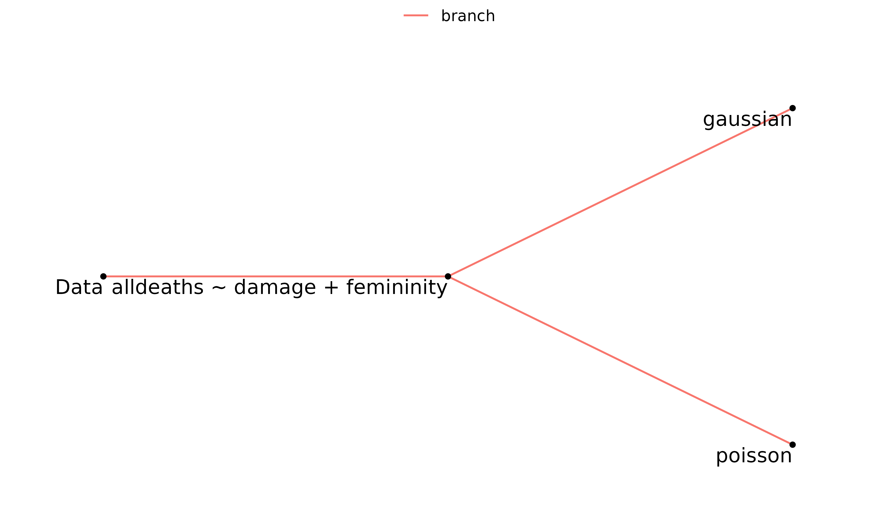
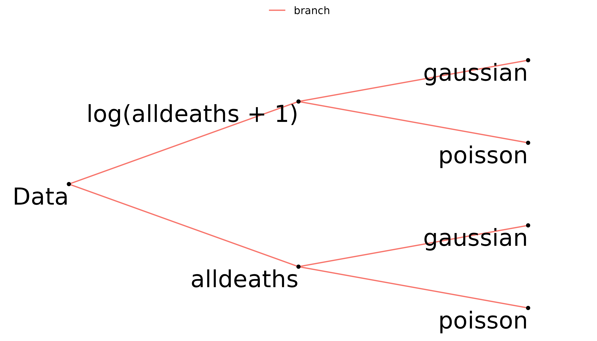
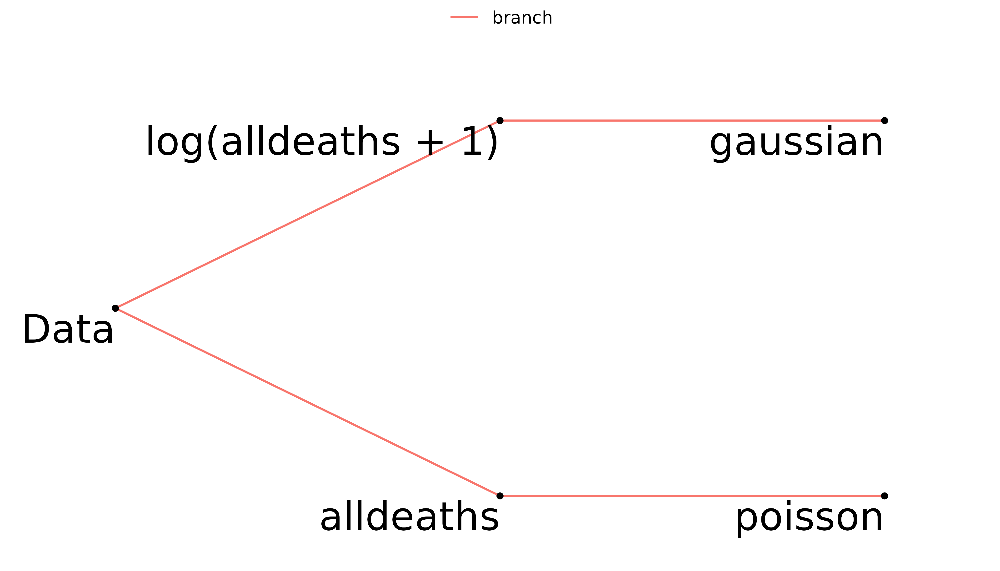

vignettes/mverse_intro_glmmodelling.Rmd
mverse_intro_glmmodelling.RmdThis vignette aims to introduce the workflow of a multiverse analysis with GLM modelling using mverse.
The typical workflow of a multiverse analysis with mverse is
multiverse object with the dataset.multiverse object.mverse ships with the hurricane dataset used in Jung et al. (2014).
glimpse(hurricane)
## Rows: 94
## Columns: 14
## $ Year <dbl> 1950, 1950, 1952, 1953, 1953, 1954, 1954, 195…
## $ Name <chr> "Easy", "King", "Able", "Barbara", "Florence"…
## $ MasFem <dbl> 6.777778, 1.388889, 3.833333, 9.833333, 8.333…
## $ MinPressure_before <dbl> 958, 955, 985, 987, 985, 960, 954, 938, 962, …
## $ Minpressure_Updated_2014 <dbl> 960, 955, 985, 987, 985, 960, 954, 938, 962, …
## $ Gender_MF <dbl> 1, 0, 0, 1, 1, 1, 1, 1, 1, 1, 0, 1, 1, 1, 1, …
## $ Category <dbl> 3, 3, 1, 1, 1, 3, 3, 4, 3, 1, 3, 2, 3, 1, 3, …
## $ alldeaths <dbl> 2, 4, 3, 1, 0, 60, 20, 20, 0, 200, 7, 15, 1, …
## $ NDAM <dbl> 1590, 5350, 150, 58, 15, 19321, 3230, 24260, …
## $ Elapsed.Yrs <dbl> 63, 63, 61, 60, 60, 59, 59, 59, 58, 58, 58, 5…
## $ Source <chr> "MWR", "MWR", "MWR", "MWR", "MWR", "MWR", "MW…
## $ HighestWindSpeed <dbl> 120, 130, 85, 85, 85, 120, 120, 145, 120, 85,…
## $ MasFem_MTUrk <dbl> 5.40625, 1.59375, 2.96875, 8.62500, 7.87500, …
## $ NDAM15 <dbl> 1870, 6030, 170, 65, 18, 21375, 3520, 28500, …To start a multiverse analysis, first use create_multiverse to create an mverse object with hurricane. At this point the multiverse is empty.
hurricane_mv <- create_multiverse(hurricane)Each branch defines a different statistical analysis by using a subset of data, transforming columns, or a statistical model. Each combination of these branches defines a “universe”, or analysis path. Branches are defined using X_branch(...), where ... are expressions that define a data wrangling or modelling option/analytic decision that you wish to explore, such as excluding certain hurricane names from an analysis, deriving new variables for analysis (mutating), or using different models. Once branches are defined we can look at the impact of the combination of these decisions.
filter_branch takes logical predicates, and finds the observations where the condition is TRUE.
The distribution of alldeaths is shown below.
hurricane %>%
ggplot(aes(alldeaths)) +
geom_histogram(bins = 25) +
stat_bin(aes(label = ..count..), bins = 25, geom = "text", vjust = -.7, size = 2)It looks like there are a few outliers. Let’s find out the names of these hurricanes.
hurricane %>%
filter(alldeaths > median(alldeaths)) %>%
arrange(desc(alldeaths)) %>%
select(Name, alldeaths) %>%
head()
## # A tibble: 6 × 2
## Name alldeaths
## <chr> <dbl>
## 1 Katrina 1833
## 2 Audrey 416
## 3 Camille 256
## 4 Diane 200
## 5 Sandy 159
## 6 Agnes 117filter_branch() can be used to exclude outliers. Excluding hurricane Katrina or Audrey removes the hurricanes with the most deaths.
death_outliers <- filter_branch(obs_all = TRUE,
obs_noKat = Name != 'Katrina',
obs_noKatAud = !(Name %in% c('Katrina', 'Audrey')))Now, let’s add this branch to hurricane_mv.
hurricane_mv <- hurricane_mv %>% add_filter_branch(death_outliers)
summary(hurricane_mv)
## # A tibble: 3 × 2
## universe death_outliers_branch
## <fct> <fct>
## 1 1 "TRUE"
## 2 2 "Name != \"Katrina\""
## 3 3 "!(Name %in% c(\"Katrina\", \"Audrey\"))"mutate_branch() takes expressions that can modify data columns, and can be used to provide different definitions or transformations of a column.
Consider two different definitions of femininity: Gender_MF is a binary classification of gender, and MasFem is a continuous rating of Femininity.
femininity <- mutate_branch(binary_gender = Gender_MF,
cts_gender = MasFem)Consider normalized damage (NDAM) and the log of NDAM.
damage <- mutate_branch(damage_orig = NDAM,
damage_log = log(NDAM))Now, let’s add these branches to hurricane_mv.
hurricane_mv <- hurricane_mv %>% add_mutate_branch(femininity, damage)
summary(hurricane_mv)
## # A tibble: 12 × 4
## universe death_outliers_branch femininity_bran… damage_branch
## <fct> <fct> <fct> <fct>
## 1 1 "TRUE" Gender_MF NDAM
## 2 2 "TRUE" Gender_MF log(NDAM)
## 3 3 "TRUE" MasFem NDAM
## 4 4 "TRUE" MasFem log(NDAM)
## 5 5 "Name != \"Katrina\"" Gender_MF NDAM
## 6 6 "Name != \"Katrina\"" Gender_MF log(NDAM)
## 7 7 "Name != \"Katrina\"" MasFem NDAM
## 8 8 "Name != \"Katrina\"" MasFem log(NDAM)
## 9 9 "!(Name %in% c(\"Katrina\", \"Audrey… Gender_MF NDAM
## 10 10 "!(Name %in% c(\"Katrina\", \"Audrey… Gender_MF log(NDAM)
## 11 11 "!(Name %in% c(\"Katrina\", \"Audrey… MasFem NDAM
## 12 12 "!(Name %in% c(\"Katrina\", \"Audrey… MasFem log(NDAM)Each row of the multiverse hurricane_mv corresponds to each combination of death_outliers (3), femininity (2), and damage (2) for a total of \(3 \times 2 \times 2 = 12\) combinations.
mverse can define different glm() models as branches. The formula for a glm model (e.g., y ~ x) can be defined using formula_branch, and family_branch defines the member of the exponential family used via a family object.
We can create formulas using the branches above or simply use the columns in dataframe. If we use the branches depvars, damage, and depvars in a formula such as
depvars ~ damage + femininity
We can add it to hurricane_mv with add_formula_branch().
models <- formula_branch(alldeaths ~ damage + femininity)
hurricane_mv <- hurricane_mv %>% add_formula_branch(models)
summary(hurricane_mv)
## # A tibble: 12 × 5
## universe death_outliers_branch femininity_bran… damage_branch models_branch
## <fct> <fct> <fct> <fct> <fct>
## 1 1 "TRUE" Gender_MF NDAM alldeaths ~ …
## 2 2 "TRUE" Gender_MF log(NDAM) alldeaths ~ …
## 3 3 "TRUE" MasFem NDAM alldeaths ~ …
## 4 4 "TRUE" MasFem log(NDAM) alldeaths ~ …
## 5 5 "Name != \"Katrina\"" Gender_MF NDAM alldeaths ~ …
## 6 6 "Name != \"Katrina\"" Gender_MF log(NDAM) alldeaths ~ …
## 7 7 "Name != \"Katrina\"" MasFem NDAM alldeaths ~ …
## 8 8 "Name != \"Katrina\"" MasFem log(NDAM) alldeaths ~ …
## 9 9 "!(Name %in% c(\"Katri… Gender_MF NDAM alldeaths ~ …
## 10 10 "!(Name %in% c(\"Katri… Gender_MF log(NDAM) alldeaths ~ …
## 11 11 "!(Name %in% c(\"Katri… MasFem NDAM alldeaths ~ …
## 12 12 "!(Name %in% c(\"Katri… MasFem log(NDAM) alldeaths ~ …Finally, let’s create a family_branch() that defines two different members of the Exponential family as branches.
distributions <- family_branch(poisson, gaussian)Adding this branch to hurricane_mv with add_family_branch().
hurricane_mv <- hurricane_mv %>% add_family_branch(distributions)
summary(hurricane_mv)
## # A tibble: 24 × 6
## universe death_outliers_branch femininity_branch damage_branch models_branch
## <fct> <fct> <fct> <fct> <fct>
## 1 1 "TRUE" Gender_MF NDAM alldeaths ~ d…
## 2 2 "TRUE" Gender_MF NDAM alldeaths ~ d…
## 3 3 "TRUE" Gender_MF log(NDAM) alldeaths ~ d…
## 4 4 "TRUE" Gender_MF log(NDAM) alldeaths ~ d…
## 5 5 "TRUE" MasFem NDAM alldeaths ~ d…
## 6 6 "TRUE" MasFem NDAM alldeaths ~ d…
## 7 7 "TRUE" MasFem log(NDAM) alldeaths ~ d…
## 8 8 "TRUE" MasFem log(NDAM) alldeaths ~ d…
## 9 9 "Name != \"Katrina\"" Gender_MF NDAM alldeaths ~ d…
## 10 10 "Name != \"Katrina\"" Gender_MF NDAM alldeaths ~ d…
## # … with 14 more rows, and 1 more variable: distributions_branch <fct>Now, we have \(12 \times 2 = 24\) different combinations.
multiverse_tree can be used to view hurricane_mv. The tree below shows that alldeaths is modelled using both Gaussian and Poisson distributions.
multiverse_tree(hurricane_mv, label = TRUE, branches = c("models", "distributions"))
glm_mverse(hurricane_mv)
glm_summary <- summary(hurricane_mv)
glm_summary
## # A tibble: 72 × 13
## universe death_outliers_branch femininity_branch damage_branch models_branch
## <fct> <fct> <fct> <fct> <fct>
## 1 1 TRUE Gender_MF NDAM alldeaths ~ d…
## 2 1 TRUE Gender_MF NDAM alldeaths ~ d…
## 3 1 TRUE Gender_MF NDAM alldeaths ~ d…
## 4 2 TRUE Gender_MF NDAM alldeaths ~ d…
## 5 2 TRUE Gender_MF NDAM alldeaths ~ d…
## 6 2 TRUE Gender_MF NDAM alldeaths ~ d…
## 7 3 TRUE Gender_MF log(NDAM) alldeaths ~ d…
## 8 3 TRUE Gender_MF log(NDAM) alldeaths ~ d…
## 9 3 TRUE Gender_MF log(NDAM) alldeaths ~ d…
## 10 4 TRUE Gender_MF log(NDAM) alldeaths ~ d…
## # … with 62 more rows, and 8 more variables: distributions_branch <fct>,
## # term <chr>, estimate <dbl>, std.error <dbl>, statistic <dbl>,
## # p.value <dbl>, conf.low <dbl>, conf.high <dbl>Each model has three rows, each corresponding to a summary of a model coefficient.
The specification curve for the coefficient of femininity is shown below.
spec_curve(hurricane_mv, var = "femininity", color_order = TRUE)
The assumption that alldeaths follows a Normal distribution is tenuous, but transforming the alldeaths using \(t(x)=\log(x+1)\) could result in a dependent variable that is closer to a Normal distribution.
hurricane %>% ggplot(aes(sample = alldeaths)) + stat_qq() + stat_qq_line()
hurricane %>% mutate(logd = log(alldeaths+1)) %>% ggplot(aes(sample = logd)) + stat_qq() + stat_qq_line()Let’s set up a similar multiverse analysis to the one above.
hurricane_mv <- create_multiverse(hurricane)
dep_var <- mutate_branch(alldeaths, log(alldeaths + 1))
femininity <- mutate_branch(binary_gender = Gender_MF,
cts_gender = MasFem)
damage <- mutate_branch(damage_orig = NDAM,
damage_log = log(NDAM))
models <- formula_branch(dep_var ~ damage + femininity)
distributions <- family_branch(poisson, gaussian)
hurricane_mv <- hurricane_mv %>%
add_mutate_branch(dep_var, femininity, damage) %>%
add_formula_branch(models) %>%
add_family_branch(distributions)Using multiverse_tree() to display the multiverse tree of dep_var and distributions shows that log(alldeaths + 1) and alldeaths will be modelled as both Gaussian and Poisson.
multiverse_tree(hurricane_mv, label = TRUE, c("dep_var", "distributions"))
In order to specify that hurricane_mv should only contain analyses where log(alldeaths + 1) is modelled using a Gaussian and alldeaths modelled using Poisson we can use branch_condition() and add_branch_condition() to add it to hurricane_mv.
match_poisson <- branch_condition(alldeaths, poisson)
match_log_lin <- branch_condition(log(alldeaths + 1), gaussian)
hurricane_mv <- add_branch_condition(hurricane_mv, match_poisson, match_log_lin)The multiverse tree shows that log(alldeaths + 1) will only be modelled as Gaussian and alldeaths will only be modelled as Poisson.
multiverse_tree(hurricane_mv, label = TRUE, c("dep_var", "distributions"))
glm_mverse(hurricane_mv)
summary(hurricane_mv)
## # A tibble: 24 × 13
## universe femininity_branch damage_branch models_branch distributions_b…
## <fct> <fct> <fct> <fct> <fct>
## 1 1 Gender_MF NDAM dep_var ~ damage +… poisson
## 2 1 Gender_MF NDAM dep_var ~ damage +… poisson
## 3 1 Gender_MF NDAM dep_var ~ damage +… poisson
## 4 2 Gender_MF NDAM dep_var ~ damage +… gaussian
## 5 2 Gender_MF NDAM dep_var ~ damage +… gaussian
## 6 2 Gender_MF NDAM dep_var ~ damage +… gaussian
## 7 3 Gender_MF log(NDAM) dep_var ~ damage +… poisson
## 8 3 Gender_MF log(NDAM) dep_var ~ damage +… poisson
## 9 3 Gender_MF log(NDAM) dep_var ~ damage +… poisson
## 10 4 Gender_MF log(NDAM) dep_var ~ damage +… gaussian
## # … with 14 more rows, and 8 more variables: dep_var_branch <fct>, term <chr>,
## # estimate <dbl>, std.error <dbl>, statistic <dbl>, p.value <dbl>,
## # conf.low <dbl>, conf.high <dbl>A summary of the 24 models on the femininity coefficients is shown in the specification curve.
spec_curve(hurricane_mv, var = "femininity", color_order = TRUE)
Jung et al. (2014) used negative binomial regression to analyse the severity of female versus male hurricane names on number of deaths. In this section we will glm.nb_mverse() to do a similar analysis.
First, let’s setup the multiverse of analyses.
hurricane_nb_mv <- create_multiverse(hurricane)
femininity <- mutate_branch(binary_gender = Gender_MF,
cts_gender = MasFem)
damage <- mutate_branch(damage_orig = NDAM,
damage_log = log(NDAM))
models <- formula_branch(alldeaths ~ damage + femininity)
hurricane_nb_mv <- hurricane_nb_mv %>%
add_mutate_branch(femininity, damage) %>%
add_formula_branch(models) A summary of hurricane_nb_mv shows the four models in the multiverse.
summary(hurricane_nb_mv)
## # A tibble: 4 × 4
## universe femininity_branch damage_branch models_branch
## <fct> <fct> <fct> <fct>
## 1 1 Gender_MF NDAM alldeaths ~ damage + femininity
## 2 2 Gender_MF log(NDAM) alldeaths ~ damage + femininity
## 3 3 MasFem NDAM alldeaths ~ damage + femininity
## 4 4 MasFem log(NDAM) alldeaths ~ damage + femininityNext, use glm.nb_mverse() to fit the negative binomial regressions.
glm.nb_mverse(hurricane_nb_mv)
summary(hurricane_nb_mv)
## # A tibble: 12 × 11
## universe femininity_branch damage_branch models_branch term estimate
## <fct> <fct> <fct> <fct> <chr> <dbl>
## 1 1 Gender_MF NDAM alldeaths ~ damage +… (Int… 1.71e+0
## 2 1 Gender_MF NDAM alldeaths ~ damage +… dama… 9.81e-5
## 3 1 Gender_MF NDAM alldeaths ~ damage +… femi… 2.27e-1
## 4 2 Gender_MF log(NDAM) alldeaths ~ damage +… (Int… -1.96e+0
## 5 2 Gender_MF log(NDAM) alldeaths ~ damage +… dama… 5.77e-1
## 6 2 Gender_MF log(NDAM) alldeaths ~ damage +… femi… 1.08e-1
## 7 3 MasFem NDAM alldeaths ~ damage +… (Int… 1.66e+0
## 8 3 MasFem NDAM alldeaths ~ damage +… dama… 9.83e-5
## 9 3 MasFem NDAM alldeaths ~ damage +… femi… 3.04e-2
## 10 4 MasFem log(NDAM) alldeaths ~ damage +… (Int… -2.05e+0
## 11 4 MasFem log(NDAM) alldeaths ~ damage +… dama… 5.76e-1
## 12 4 MasFem log(NDAM) alldeaths ~ damage +… femi… 2.40e-2
## # … with 5 more variables: std.error <dbl>, statistic <dbl>, p.value <dbl>,
## # conf.low <dbl>, conf.high <dbl>Finally, we can plot the specification curve.
spec_curve(hurricane_nb_mv, var = "femininity", color_order = TRUE)
Jung, Kiju, Sharon Shavitt, Madhu Viswanathan, and Joseph M. Hilbe. 2014. “Female Hurricanes Are Deadlier Than Male Hurricanes” 111 (24): 8782–7. https://doi.org/10.1073/pnas.1402786111.